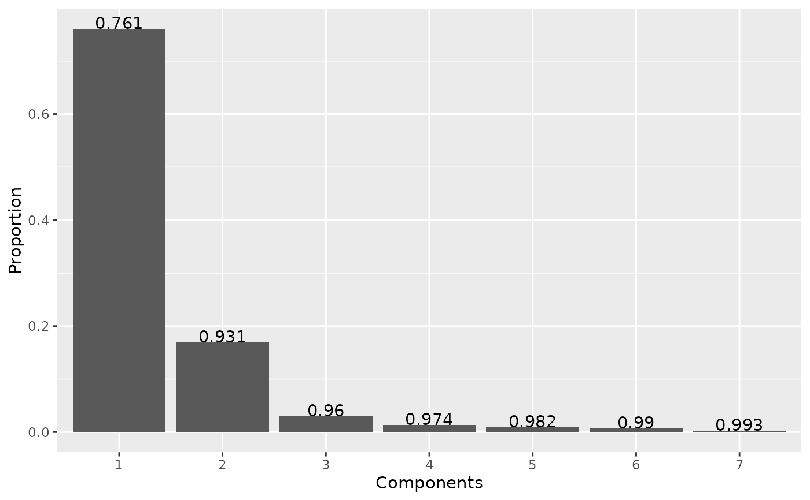
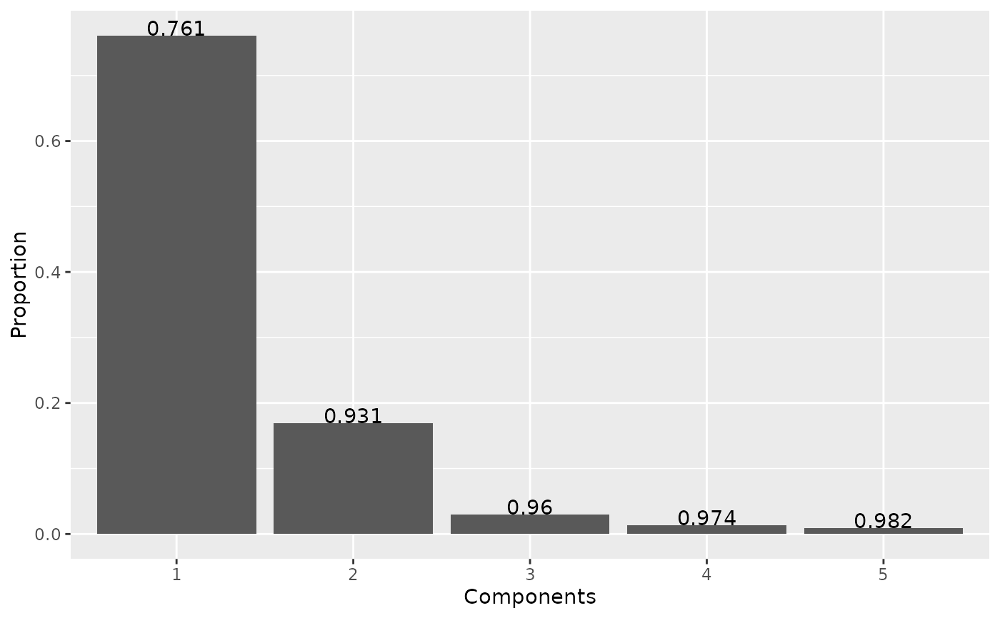

A set of functions around PCA/LDA eigen/trace. scree calculates their proportion and cumulated proportion;
scree_min returns the minimal number of axis to use to retain a given proportion; scree_plot displays a screeplot.
Usage
scree(x, nax)
# S3 method for class 'PCA'
scree(x, nax)
# S3 method for class 'LDA'
scree(x, nax)
scree_min(x, prop)
scree_plot(x, nax)Arguments
- x
a PCA object
- nax
numeric range of axes to consider. All by default for
scree_min, display until0.99forscree_plot- prop
numeric how many axes are enough to gather this proportion of variance. Default to 1, all axes are returned defaut to 1: all axis are returned
Examples
# On PCA
bp <- PCA(efourier(bot))
#> 'norm=TRUE' is used and this may be troublesome. See ?efourier #Details
#> 'nb.h' set to 10 (99% harmonic power)
scree(bp)
#> # A tibble: 40 × 3
#> axis proportion cumsum
#> <int> <dbl> <dbl>
#> 1 1 0.761 0.761
#> 2 2 0.170 0.931
#> 3 3 0.0294 0.960
#> 4 4 0.0135 0.974
#> 5 5 0.00860 0.982
#> 6 6 0.00719 0.990
#> 7 7 0.00306 0.993
#> 8 8 0.00190 0.994
#> 9 9 0.00159 0.996
#> 10 10 0.00122 0.997
#> # ℹ 30 more rows
scree_min(bp, 0.99)
#> [1] 7
scree_min(bp, 1)
#> [1] 37
scree_plot(bp)

scree_plot(bp, 1:5)

# on LDA, it uses svd
bl <- LDA(PCA(opoly(olea)), "var")
#> 'nb.pts' missing and set to 91
#> 'degree' missing and set to 5
#> 4 PC retained
scree(bl)
#> # A tibble: 3 × 3
#> axis proportion cumsum
#> <int> <dbl> <dbl>
#> 1 1 0.913 0.913
#> 2 2 0.0603 0.973
#> 3 3 0.0268 1